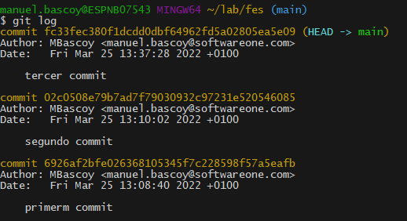
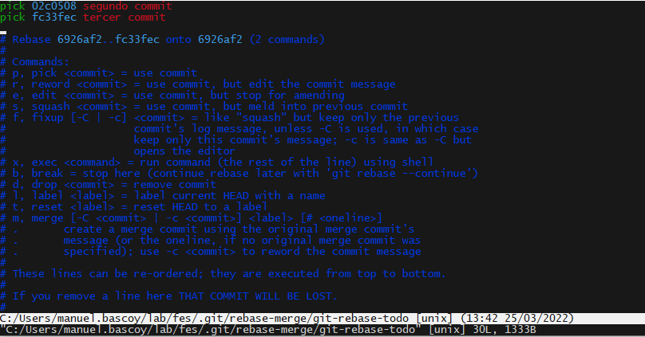
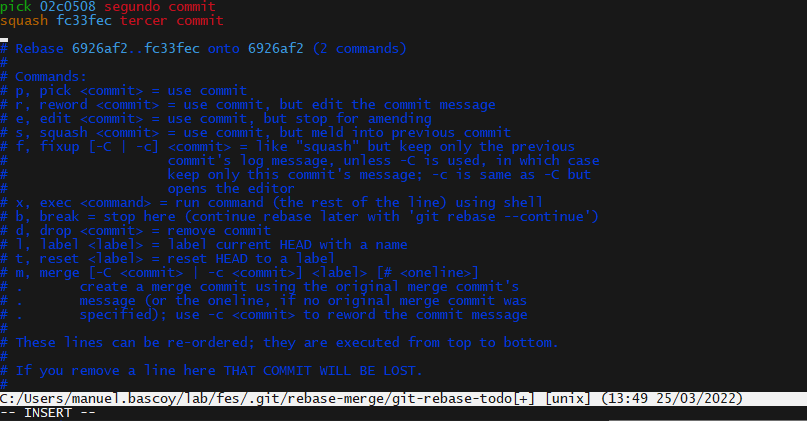
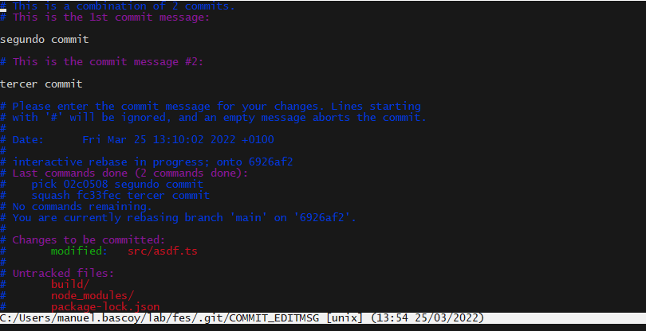
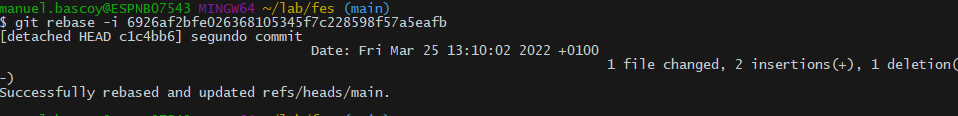
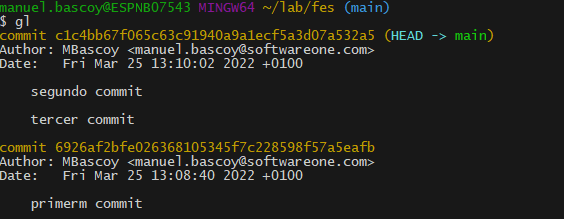

Como hacer un Squash para unir varios commits del log en un solo commit.
Partimos de un escenario en el que tenemos estos tres commits:
Vamos a hacer que los dos ultimos commits (el segundo y el tercero) queden representados en el log como un solo commit
NOTA: El rebase solo se puede hacer a partir del primer commit, si quisiesemos juntar los 3 commits en uno no podríamos porque uno de los commits es el commit inicial del repositorio y ese no podemos juntarlo
Para hacer un Squash primero tenemos que utilizar el comando rebase tal que así:
git rebase -i HEAD~2
Usamos HEAD~2 para indicar los dos ultimos commits, tambien podemos indicar el id del commit a partir del cual se hará el rebase (el rebase se hace a partir de ese commit, no se incluye el propio commit que indicamos), en este caso tendríamos que indicar el id del primer commit para que nos coja los dos siguientes (De hecho HEAD~2 hace referencia al primer commit, dos commits por encima de HEAD)
El siguiente comando sería equivalente al anterior:
git rebase -i 6926af2bfe026368105345f7c228598f57a5eafb
A continuación se nos abrirá un editor con los commits sobre los que se hará el rebase
Ahora dejamos el primer commit de la lista como pick y el resto cambiamos pick por squash (o simplemente la letra s):
Y guardamos con ESC :wq
A continuación se nos abre un nuevo editor donde podemos editar el mensaje del commit resultante, por defecto se pondrán los mensajes de todos los commits sobre los que vayamos a hacer el squash:
Guardamos nuevamente con ESC :wq
Y vemos que el squash se ha realizado correctamente:
Si hacemos un git log vemos como se han unido los dos commits
Si nos fijamos en la hora del commit es la hora que tenía el commit mas antiguo del squash, esto no lo podemos cambiar ya que el pick tiene que ser el commit mas antiguo, aún así podemos ver como el nuevo commit tiene un ID completamente diferente, los dos commits sobre los que se ha hecho el squash han desaparecido y se genera un nuevo commit.
Git | Squash | Rebase